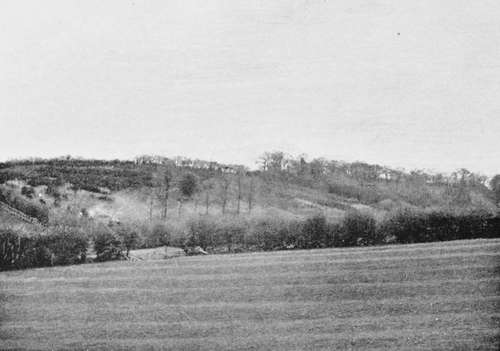

The Fox. Part 3
Description
This section is from the book "Hunting: A Manual of Fox, Hare, Stag & Otter Hunting", by J. Otho Paget. Also available from Amazon: Hunting: A Manual of Fox, Hare, Stag & Otter Hunting.
The Fox. Part 3
A fox must have a dry place to lie in, and that place must be free from all disturbance. This is all he wants, but this he must have or he will not patronise your covert. The dry place may be a bunch of rushes in the middle of a swamp, or a bank in an osier-bed that is half under water, but if the kennel itself is dry and sheltered he is quite content. Though the wild fox is a very shy animal, hating to be seen by man, I do not think he minds people in his neighbourhood if they are unaccompanied by dogs. Woodmen have frequently told me of foxes lying within a few yards of where they have been working all day, and have put them up as they were going home. The keeper of a celebrated covert, and who is also the woodman, told me that one day he brought his dinner as usual tied up in a cotton handkerchief, inside a flag basket which he laid on the ground and left about twenty yards from where he was working. When he went for his midday meal he found the handkerchief half-way out of the basket and the mutton-bone missing which was to have been part of his dinner, a strong smell of fox in the basket leaving no doubt who had been the thief. Some people go so far as to say that foxes like the society of human beings, but that I am not quite sure about. We must remember that the animal we all do our best to protect and look after during the summer, lives under very different circumstances from his ancestor of two hundred years ago, against whom was every man's hand. Both animals and birds soon find out when they are not molested. The wary old blackcock will allow you to get within a few yards in the summer-time ; the wood-pigeon, shyest of all birds, has become in the London parks as tame as the house - sparrow; and hares will hardly take the trouble to get out of your way, if they are free from dogs or guns for a few years.
The question is often asked, ' What can I do to have foxes in my covert ?' The first thing to be done is to ensure the place being kept perfectly quiet, and that means a vigorous exclusion of dogs. A dog should not be allowed in a covert on any pretence whatever, and if the keeper possesses one he should leave it at home when he goes to stop the earths. A fox likes to lie in a place where he feels he can sleep peacefully, without having to be continually on the alert for the approach of prowling dogs. It is the doggy smell which hounds leave in a covert1 that prevents foxes lying in it for some time. The young foxes bred in that covert, and knowing no other home, are not quite so particular and will soon return. If, however, you wish to find the wary old traveller, your covert must have at least three weeks' rest before it is drawn again. This does not apply to large woodlands, but only to small places of twelve acres and less.
You must not expect to find foxes always in the same spot. Gorse affords the driest lying, and therefore it is the most likely stuff to find in on a wet day ; but when exposed to a high wind you must look elsewhere. The reason of this is that the wind keeps the gorse continually moving, and it is easy to understand, an animal that is obliged to sleep with one ear open for any coming danger would object to this perpetual rustling above his head.
1 It clings to the covert as the smell of the ferret to the rabbit's burrow, and has the same deterrent effect on the wild creature.—Eds.
Woods and plantations are unlikely places in wet weather on account of the drip from the trees, but in a cold wind they afford the warmest shelter. A dry bed and shelter from the wind are the two things most essential to a fox's comfort. Large woods have generally some places where the trees are not close together, where there are bunches of long grass and thick undergrowth, and it is in these spots that a fox is able to find a kennel to his liking, be the weather windy or wet. Foxes have their own individual tastes, and it is not safe to class the whole tribe by the conduct of one particular specimen. I remember, one cold frosty morning, seeing a fox curled up on the top of a ridge in the middle of a bare grass field that was fully exposed to the wind. According to preconceived ideas he ought to have been lying snugly in the warmest corner of some covert, but there he was and his coat was covered with hoar frost, showing that he must have finished his supper and gone to bed some hours before sunrise.
Foxes will lie out in the open when the coverts, where they usually live, are disturbed too often. I have said already artificial coverts should not be drawn oftener than every three weeks. Outlying foxes are a great nuisance, as they generally get up just when the hounds are becoming tired, and cause a change at a critical moment. They are never, or hardly ever, to be found when wanted, and they usually do more damage to the poultry. Mange often causes them to lie out, or they may have been driven away from the covert where they were bred by other foxes, for it is a quarrelsome animal, and it is not often you will find a brace of dogs over three years old lying close together. There are many other reasons which cause them to lie out, and which we know nothing about. The covert which we think is sacred between one visit of hounds and the next is very probably drawn two or three times a week by terriers and sheepdogs.
In making an artificial covert, that is a place expressly for the purpose of holding foxes, I would not have it less than five acres or more than twelve. Anything under five acres cannot be depended on with any degree of certainty, and anything over twelve gives a fox, unwilling to go away, too great an advantage over hounds. Of course I am speaking of a thorn or gorse covert, and not a place that is planted with trees. If the field you intend to plant is not naturally sheltered by the lie of the land or by trees, I advise you to put in, all round the outside, a double row of Austrian pines, as they grow very quickly and make a splendid break for the wind. It is a good plan to have a whitethorn barricade of about ten yards deep all round the covert, the thorn to be layered and then kept cut. The object of this is to prevent people and cattle from getting in and disturbing the foxes, but whitethorn does not make good covert of itself unless mixed with privet. Blackthorn makes the best covert, though there are times when gorse is preferred.
A Celebrated Quorn Covert
Continue to:
- prev: The Fox. Part 2
- Table of Contents
- next: The Fox. Part 4